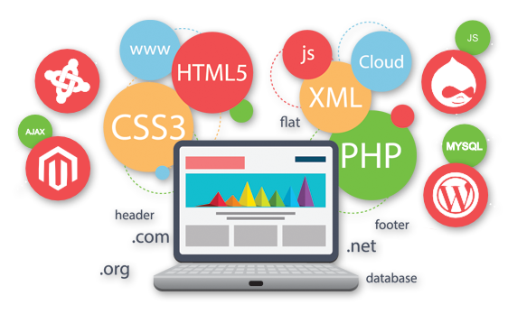

01
Bases de Datos
Consultas SQL, ejercicios y prácticas de la asignatura de Bases de Datos.

Estudiante de Desarrollo de Aplicaciones Web
Bienvenido a mi portfolio personal. Aquí encontrarás una selección de mis trabajos y prácticas realizados durante el ciclo de DAW.
“
La programación no es solo una serie de instrucciones para las máquinas, también es una forma de expresar ideas.
— Donald Knuth
Selecciona una asignatura para acceder a sus trabajos.
Consultas SQL, ejercicios y prácticas de la asignatura de Bases de Datos.
Ejercicios y proyectos realizados durante la asignatura de Programación.
Espacio reservado para los trabajos de Lenguaje de Marcas.